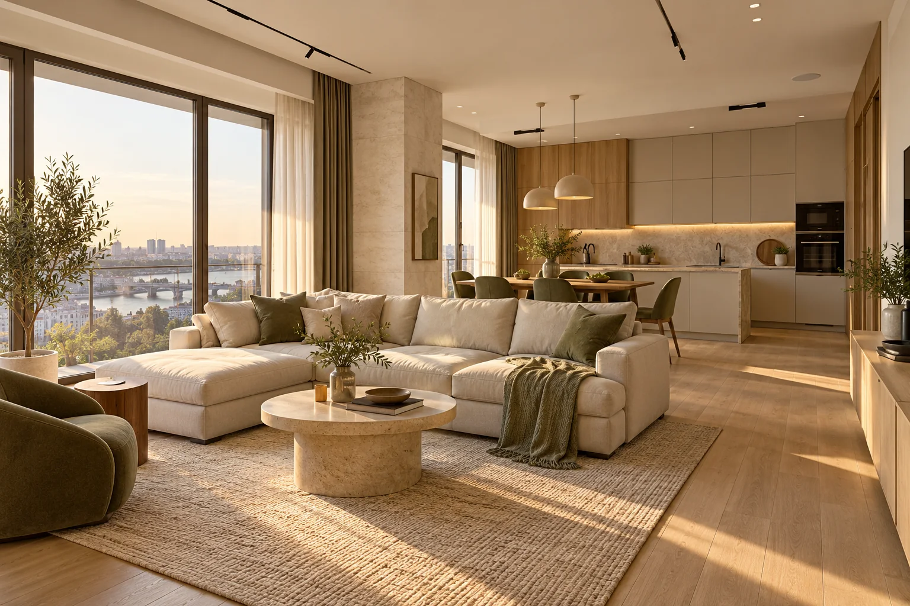
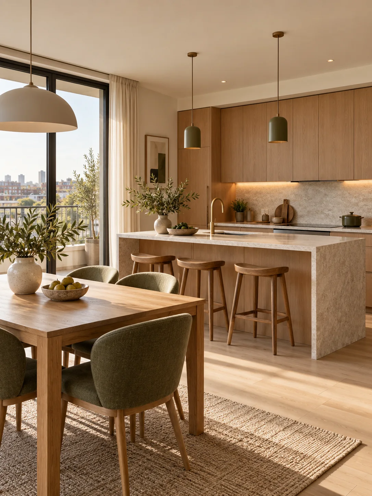
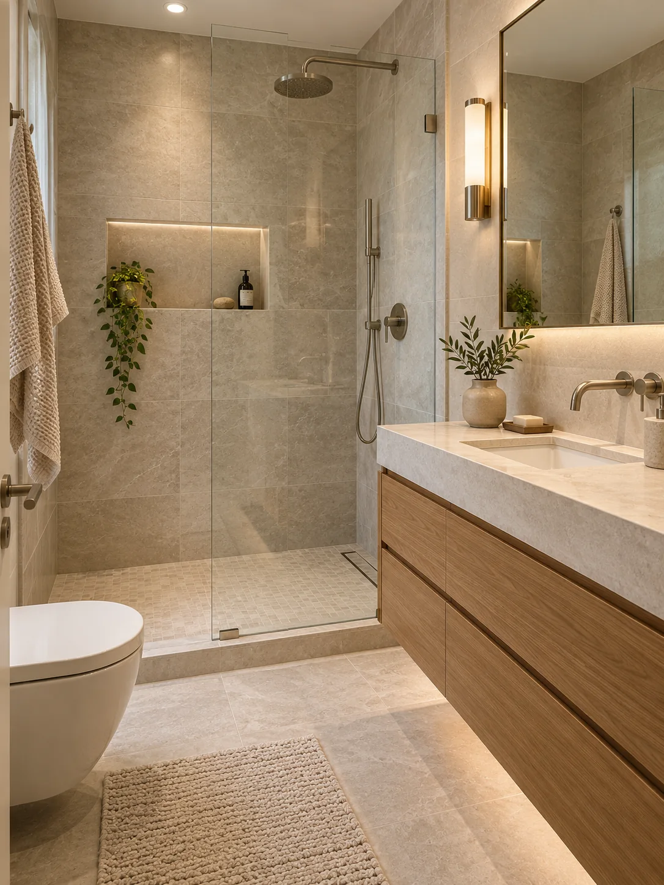
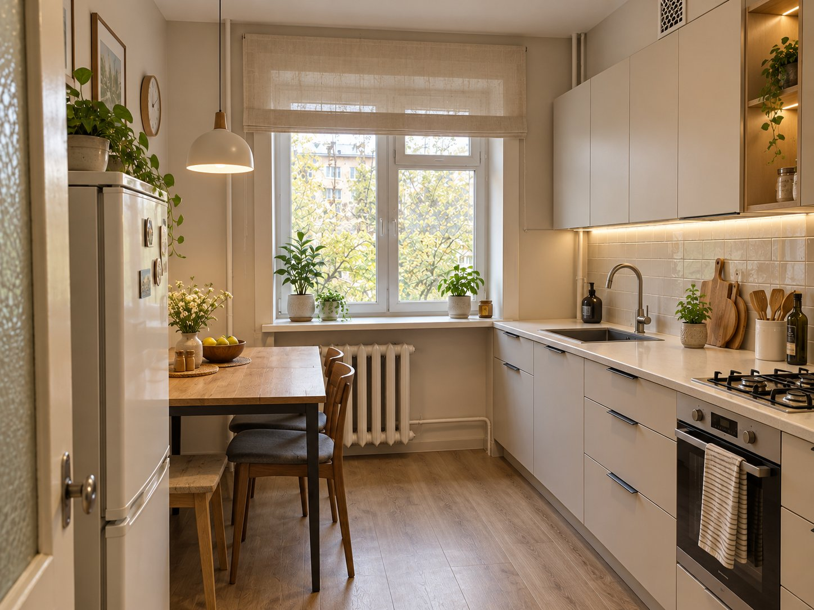
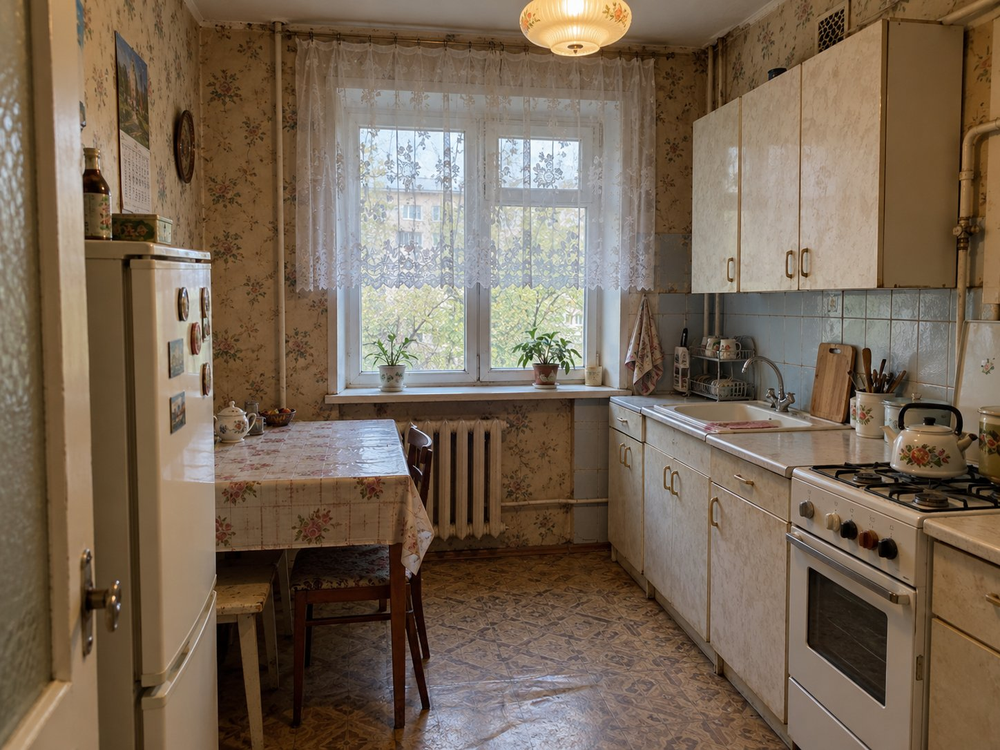
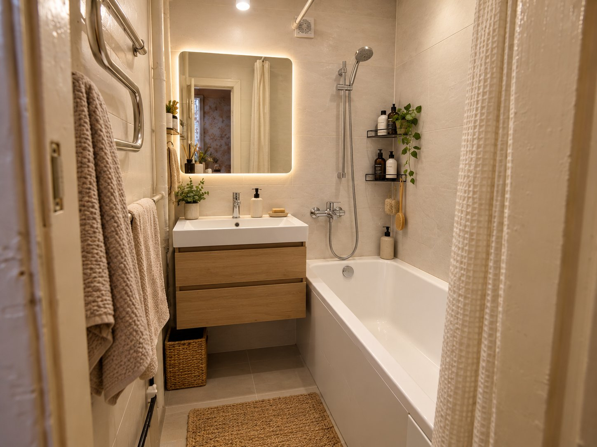
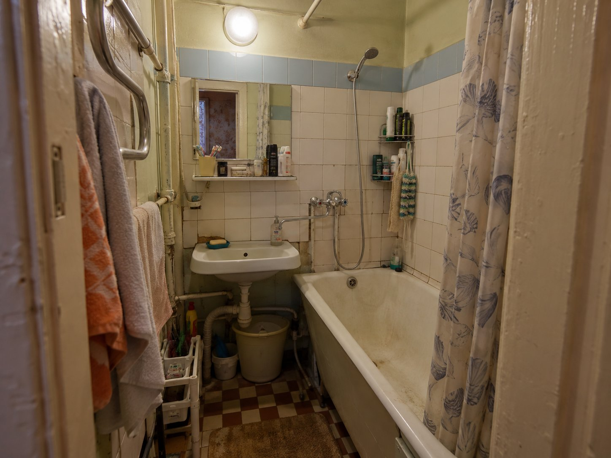
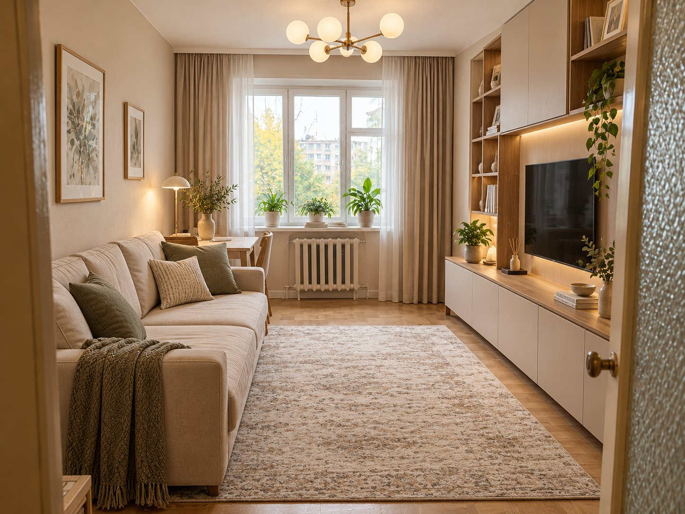
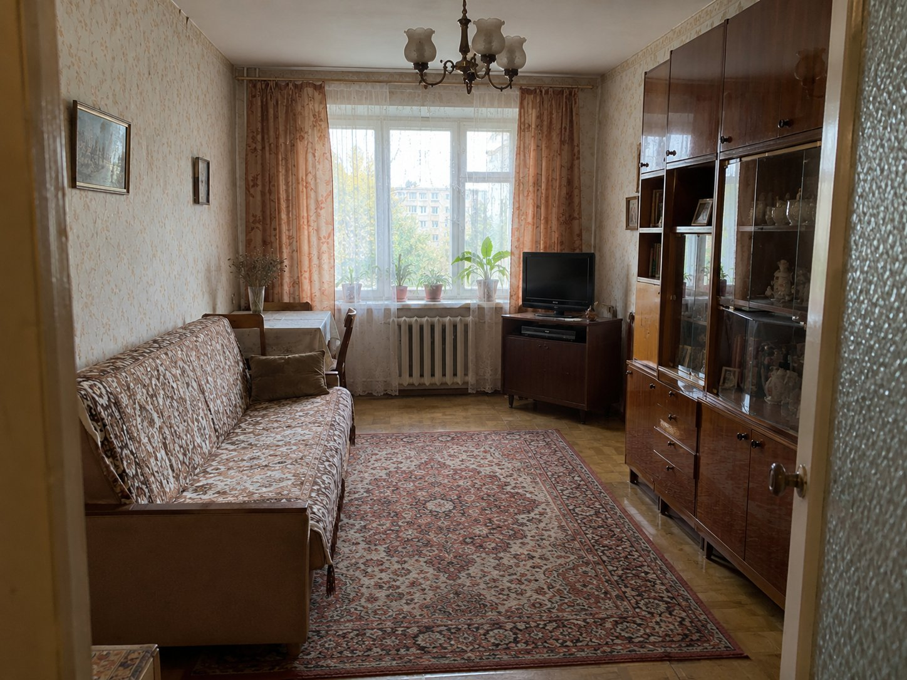

Понятный объём работ
Обсуждаем задачи до начала ремонта, чтобы вы видели, из чего складывается стоимость.

MURZ / СТУДИЯ РЕМОНТА
От первого замера до готового интерьера. Обсуждаем задачи, рассчитываем работы и ведём ремонт по этапам.
MURZ — студия ремонта квартир в Ростове-на-Дону. Помогаем превратить задачу «нужно сделать ремонт» в понятный порядок работ, смету и готовое пространство.
Начинаем с квартиры и ваших пожеланий. Затем выбираем решения, согласовываем объём работ и двигаемся шаг за шагом.
Как мы работаемНесколько интерьерных образов, которые показывают наш подход к фактурам, свету и спокойной палитре. Это визуализации, не фотографии завершённых объектов.



Передвиньте разделитель, чтобы сравнить кухню до ремонта и после обновления.


Сравните старую отделку и обновлённое пространство, передвигая разделитель по фотографии.


Передвиньте разделитель, чтобы увидеть, как меняется гостиная после обновления.


В ремонте важны не только материалы и мастера. Не меньше значат понятные решения на каждом этапе.
Обсуждаем задачи до начала ремонта, чтобы вы видели, из чего складывается стоимость.
Подбираем отделку с учётом состояния квартиры, бюджета и желаемого результата.
У каждого шага есть своя задача — от подготовки основания до финальной отделки.
Проверяем выполненные работы и обсуждаем вопросы по мере движения проекта.
Косметическое обновление или полный ремонт с инженерными работами — объём определяем после знакомства с объектом.
Освежить интерьер, обновить покрытия и детали без масштабной перестройки квартиры.
Подробнее об услугеПодготовка оснований, инженерные работы и отделка — с планированием всего объёма.
Подробнее об услугеРабота по готовым чертежам и ведомостям с вниманием к деталям задуманного интерьера.
Подробнее об услугеРазбиваем большой ремонт на последовательные решения. Так проще понимать, что происходит сейчас и что будет дальше.
Вы рассказываете о квартире, задачах и желаемом результате.
Оцениваем состояние объекта и уточняем технические детали.
Определяем состав работ и обсуждаем решения до старта.
Выполняем работы по согласованной последовательности.
Проверяем результат и передаём готовое пространство.
Выберите тип квартиры, формат ремонта и площадь. Таблица поможет сравнить ориентиры за работы, а подробную смету подготовим под ваш объект.
Когда старую отделку демонтировать не требуется. Объём подготовки зависит от состояния квартиры после застройщика.
| Формат ремонта | до 40 м² | 41–80 м² | более 80 м² |
|---|---|---|---|
| Косметический ремонт Обновление отделки и деталей | 17 500 ₽/ м² | 15 400 ₽/ м² | 14 300 ₽/ м² |
| Капитальный ремонт Основания, инженерия и отделка | 19 000 ₽/ м² | 17 200 ₽/ м² | 16 100 ₽/ м² |
| По дизайн-проекту Работы по готовым чертежам | 21 200 ₽/ м² | 19 500 ₽/ м² | 19 000 ₽/ м² |
Существующие покрытия и коммуникации сначала проверяем. Демонтаж и подготовка могут заметно изменить объём работ.
| Формат ремонта | до 40 м² | 41–80 м² | более 80 м² |
|---|---|---|---|
| Косметический ремонт Демонтаж покрытий и новая отделка | 20 300 ₽/ м² | 18 200 ₽/ м² | 17 100 ₽/ м² |
| Капитальный ремонт Замена инженерии и подготовка оснований | 22 800 ₽/ м² | 21 000 ₽/ м² | 19 900 ₽/ м² |
| По дизайн-проекту Комплексный ремонт по чертежам | 24 000 ₽/ м² | 22 800 ₽/ м² | 21 800 ₽/ м² |
Как читать таблицу. Это ориентиры по площади, а не итоговая цена договора. Состояние квартиры, перечень работ, материалы и технические решения уточняем после осмотра и фиксируем в смете.
Обсудить сметуДо начала работ обсуждаем состав ремонта, материалы и порядок взаимодействия.
После осмотра квартиры готовим расчёт под конкретный объект и ваши задачи.
Расскажите о квартире и желаемом результате. Начнём с разговора, затем определим следующий шаг.
+7 (928) 411-31-21 Сначала рассчитать ориентир